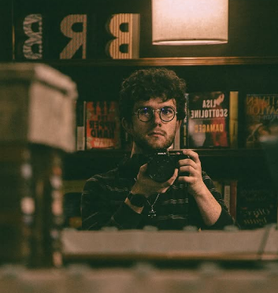
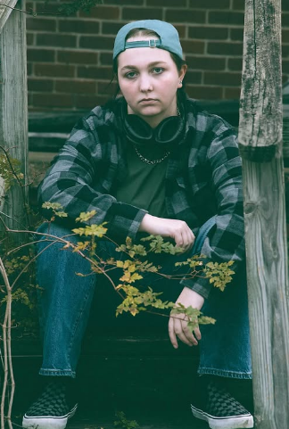

In this club, we enjoy diving into different mediums of photography!
In some meetings, we will hold a photoshoot in which our members will practice shooting photos in different ways.
We give back to the community by sharing photos we have taken around the beautiful city of Ruston.
Our members come from all walks of life and use that to show others hidden gems of life!
Meet the group!

President/Founder
Cason Smith
Cason Smith, the founder and president of the LA Tech Photography Club, is a dedicated photographer who has spent the majority of his life working on understanding the art.
He has worked under Kevin Beasley and Jennifer Robison and has been asked to shoot for events such as Christmas in the Sky, Louisiana Film Prize, and Shreveport Times.
When he came to Tech in 2024 he wanted to create a place for photographers to come together to share their knowledge.

Public Relations managment
Sky Dycus
Sky Dycus is our Public Relations Director and oversees our outreach with potential new members as well as our networking efforts!.
Being from Ruston, Sky always knows the best places to shoot and is always thinking of opportunities for club events.
They are well versed in graphic design and have worked as head photography for their high school's yearbook committee.

Information Technology managment
Abbie Wallen
Abbie Wallen is our technology specialist.
She is a Computer Science major who has helped create a bot for our Discord server and even this informative website.
Our group is always trying to help find easier ways for others to join and share via technology and Abbie is here to help!